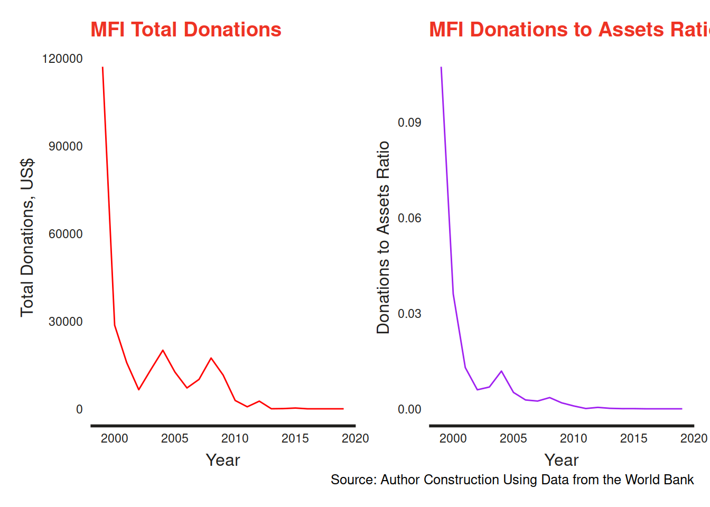
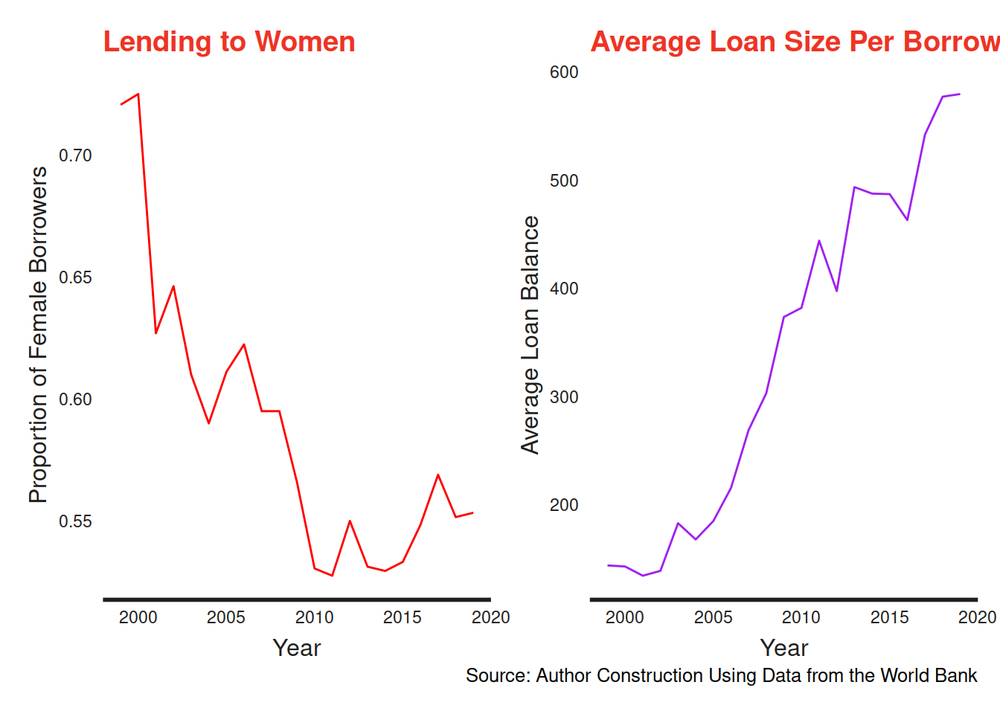
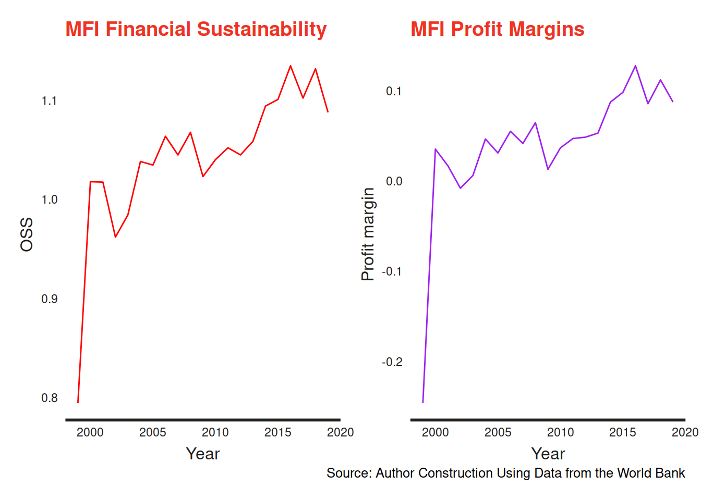

Looking Inwards: Impact Investing by Africans: The Case of Microfinance in Africa
The article appears in The WITS ACSUS website, July 26, 2021. Follow the link below.
https://usbusinessinafricaawards.com/economics-trade-2/
Background
Impact investing relates to the use of corporate principles to generate environmental, social and governance (ESG) gains over and above financial goals. Indeed, the involvement of private enterprises in solving social problems would complement the efforts of philanthropists and the state. The rise to prominence of hybrid organisations that balance doing social good and making money first developed around the idea of corporate social responsibility (CSR) (Billis and Rochester 2020). The critique of CSR was that it served as a a public relations exercise that delivered minimal social and environmental impact. To guard against the drawbacks of CSR, impact investing aims at generating quantifiable and sustainable ESG benefits. Specifically, impact investing seeks to increase the quality or quantity (or both) social outcomes beyond what would otherwise have occurred without the investment (Brest and Born 2013). Nonetheless, striking this balance is easier said than done. The concerns in the literature relating to impact investing revolve around assessing impact and whether or not it is possible to simultaneously achieve social impact and risk adjusted market-rate financial returns (Bugg-Levine and Emerson 2011).
In this article, I examine impact investing in Africa from the perspective of microfinance (MF). Specifically, I examine the opportunity for sourcing finance in Africa to supplement donations from the west and local state subsidies. MF has been the bedrock of financial inclusion in poor communities, especially with the success of the Grameen Bank in Bangladesh. Critically, most financial intermediaries do not avail financial services to the poor who are often dispersed in remote, rural areas, and often lack adequate collateral and credit history (Kodongo and Kendi 2013). Offering financial services to these financially excluded people is a clear case of impact investing as mainstream markets may not offer them these services 1.
The initial MF model mostly relied on donations and state subsidies, with major donors being USAID and the Ford Foundation. Microfinance institutions (MFIs) following this approach were mainly NGOs focused primarily of offering financial services to the financially excluded, with little regard for profitability and financial sustainability. Critics noted that this financing approach masked internal inefficiencies in MFIs and crowded out alternative, financially sustainable commercial providers of financial services (Kota 2007). The rise of neo-liberalism after the cold war led to a gradual shift in the financing model for MFIs. Increasingly, donors and governments have reduced their support for MFIs (see figure 1).

Hence, MFIs have to raise finance in mainstream capital markets, including deposits. By extension, this means that MFIs have to make ample financial returns to pay off debt, interest and dividends. To continue focusing on the social mission of reaching the financially excluded, MFIs have to turn to impact investors. Investors who are not keen on the social performance of MFIs are likely to push managers of MFIs to generate profits at the expense of the social mission, a decision that may threaten the legitimacy of MFIs. This financing model raises important questions that I address partially in this article. Are MFIs in Africa ready for the shift to the hybrid model where financial sustainability is as important as social outreach? Can the MF model based on commercial, profit-oriented principles still deliver on the social goals of reaching the financially excluded? Are there trade-offs between social outreach and the financial performance of MFIs that raise capital from commercial sources?
More critically, the model points to the over-reliance of MFIs in Africa on foreign donations. Several scholars have raised concerns over the inherent uncertainty of donations and aid. For instance, Garmaise and Natividad (2013) notes that the flow of donations has a positive link with the state of bilateral political relationship between the donor and the recipient countries. Armendáriz et al. (2013) further illustrates that uncertainty in donations and subsidies to microfinance can cause MFIs to abandon their social mission by focusing more on meeting their operating costs. Moreover, the flow of capital from the west to Africa has a positive relationship with economic health in the source country. For instance, the financial crisis that started in 2007 saw a drastic decline in donations and other sources of capital to MFIs from the West []. Which brings us to the next question. How can MFIs harness capital from Africans resident on the continent or the diaspora to drive the agenda of financial inclusion on the continent?
The issues I address in this article are important in light of SDGs and Africa Union (AU) Agenda 2063. SDG 1: Ending poverty in all its forms everywhere, aptly captures the essence of sustainable microfinance globally. One of the deliverables of SDG 1 has to do with access to resources, including financial resources (General Assembly 2015; African Union 2015).
By 2030, ensure that all men and women, in particular the poor and the vulnerable, have equal rights to economic resources, as well as access to basic services, ownership and control over land and other forms of property, inheritance, natural resources, appropriate new technology and financial services, including microfinance.
The AU agenda 2063 has an even more explicit target relating to development in Africa.
Africa takes full responsibility for financing her development.
For Africa to take control of her destiny, then her people must take charge of financing enterprises in the continent. In this context, it is important that Africans take a lead in financing impact investments on the continent.
In the next section, I address the issue of potential trade-offs between the financial sustainability of MFIs and their social goals of reaching the financially excluded. Next, I examine the extent to which MFIs in Africa can harness finance from Africans within the continent and in the diaspora to finance their activities.
How Well Prepared are MFIs for the Shift to the Hybrid Model
As noted before, the shift from the social model to the hybrid model of microfinance took root with the rise of neo-liberalism after the cold war (Bateman 2010). Before then, the bulk of the capital was in the form of donations and state subsidies (D’Espallier et al. 2017). The new world order saw the emphasis on the financial sustainability of enterprises that manifested not only in microfinance but also at country level with the much criticized structural adjustment programs (SAPs). The accompanied reduction in donations to MFIs forced most of them to turn to capital markets for financing. In 1992, PRODEM, an NGO in Bolivia became the first MFI to fully convert to a commercial bank, BANCOSOL. Many other MFIs globally have since taken up the profit-oriented model, either as commercial banks, Non-Bank Financial Institutions (NBFIs), or rural banks (Hishigsuren 2006).
The percentage of female borrowers is a key proxy for measuring financial inclusion outcomes by financial intermediaries, as is the average loan balance per borrower. Because women bear the blunt of financial exclusion, MFIs that lend to relatively more women have better social performance outcomes (Espinosa-Vega et al. 2020). On the contrary, lower average loan balance per borrower corresponds to better social performance given that financially excluded people are likely to demand smaller loans. Figure 2 shows that the median social performance of MFIs in Africa has declined drastically.

Figure 3 below shows the trends in financial sustainability and profit margin of MFIs. Financial sustainability captures the extent that an MFIs revenues cover the operating expense. Operational self-sufficiency (OSS) is the ratio of revenues to operating costs, a common proxy for financial sustainability, with a ratio at least one preferable. Profit margin is the ratio of profits to total revenues. A positive profit margin indicates profitability (Abeysekera, Oguzoglu, and Le 2014). The plots show that most MFIs are barely financially sustainable, although there is an upward trend in median OSS and profit margin. These results indicate that MFIs are gradually adjusting to the financial sustainability model. Faced with increased financial pressures, it appears that MFIs sacrifice their social mission for profits.

The circumstances surrounding the conversion point to poor preparedness by MFIs for the transition to the hybrid model. Bateman (2010) attributes the conversion to explicit pressure by donors on MFIs to adopt the hybrid model, meaning that MFIs had little room to adapt their business practices to suit the commercial model. That MFIs could bow to pressure from donors to alter their operating model at the risk of affecting their social mission shows the vulnerability of MFIs to foreign finance.
Local Capital for Local Microfinance
The MF industry draws its legitimacy chiefly from the ability to meet social goals. The prior discussion shows that MFIs may be sacrificing their social goals of reaching the financially excluded in favour of profits. While not advocating for a complete replacement of foreign capital, locally sourced funds would allow MFIs to focus on their social goals.
The key points from the discussion are as follows;
The flow of capital from the west to finance MFIs in Africa is constrained by the state of political relationships between countries.
The flow of capital from the west to finance MFIs in Africa is dependent on economic conditions in the countries of origin.
Moreover, given that foreign investors may not be conversant with the investment environment in Africa, they may be reluctant to invest in MF in Africa, or may demand high returns to compensate for higher risk.
One of the major drawbacks regarding impact investing is the lack of adequate data and documentation to allow for the evaluation of the extent of the local impact investment funds. Much of what we know about impact investing relates to western capital that flows into Africa. For instance, the website https://thebigdeal.substack.com/ tracks the flow of start up funds from the West to Africa. In this regard, Africa seems a mere recipient of funds and not as a potential source of funds over and above what comes from the west. Also, the managers of projects funded using foreign capital may not have an understanding of local context to allow them tailor their projects to solve the most urgent and pressing needs. What is notable in this respect is that foreign capital flows predominantly to firms where the founders are western and specifically white. 2
Way Forward
The issues I have raised in the discussion so far point to the need for Africa to source local resources to fund development beyond official development assistance from the West. Already, this is happening with the realization of the importance of remittances for development. Africa is vast and heterogeneous and has always had a weak data infrastructure. This means that impact investing within the continent is hardly documented. Instead, much of the literature, understandably captures the flow of impact investment from the west. The onus is on the generation of local data and research output that allows for the mobilization of local resources to solve local problems.
References
Footnotes
The accessibility and use of financial services has changed with the rise of Fintech, especially mobile money. Commercial banks and other financial intermediaries can now reach people in remote locations without setting up physical branches. Still, a significant proportion of people are unable to use these services due to the aforementioned constraints.↩︎
See full article at https://restofworld.org/2021/kenya-hasnt-figured-out-how-to-put-its-local-founders-first/.↩︎